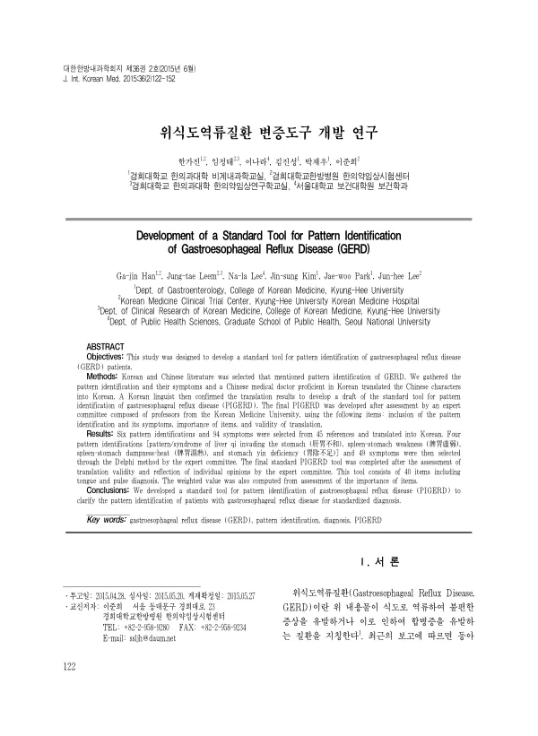

Development of a Standard Tool for Pattern Identification of Gastroesophageal Reflux Disease (GERD)
Han Gj, Leem J, Lee N, Kim Js, Park Jw, Lee Jh
The Journal of Internal Korean Medicine 36(2):122-152

첫 장 · 오픈액세스First page · open access
논문 소개Summary
위식도역류질환의 변증을 표준화하기 위한 도구 개발 연구입니다. 국내 유병률이 오르고 양성자펌프억제제를 끊으면 재발이 잦아 한의 치료에 관심이 커졌지만, 변증이 연구자마다 달라 결과를 견주기 어려웠습니다. 저자들은 한국과 중국 문헌 45편에서 변증 6가지와 증상 94개를 뽑아 한국어에 능한 중의사가 옮기고 국어학자가 확인했습니다. 이어 한의과대학 교수들로 구성한 전문가위원회가 델파이 방식으로 변증 4가지(肝胃不和·脾胃虛弱·脾胃濕熱·胃陰不足)와 증상 49개를 골랐고, 번역 타당성 평가를 거쳐 설진·맥진을 포함한 40문항 도구를 완성하고 항목 중요도로 가중치를 산출했습니다.
A study developing a standard tool for pattern identification in gastroesophageal reflux disease. Prevalence in Korea has been rising and relapse is common once proton pump inhibitors are stopped, which has increased interest in Korean medicine treatment; but pattern identification differed from researcher to researcher, making results hard to compare. The authors drew six patterns and 94 symptoms from 45 Korean and Chinese references, translated through a Chinese medical doctor proficient in Korean and verified by a Korean linguist. An expert committee of Korean medicine professors then used the Delphi method to select four patterns - liver qi invading the stomach, spleen-stomach weakness, spleen-stomach dampness-heat, and stomach yin deficiency - and 49 symptoms, and after assessment of translation validity a 40-item tool including tongue and pulse diagnosis was completed, with weights computed from ratings of item importance.
인용Cite
Han Gj, Leem J, Lee N, Kim Js, Park Jw, Lee Jh. Development of a Standard Tool for Pattern Identification of Gastroesophageal Reflux Disease (GERD). The Journal of Internal Korean Medicine. 2015;36(2):122-152.